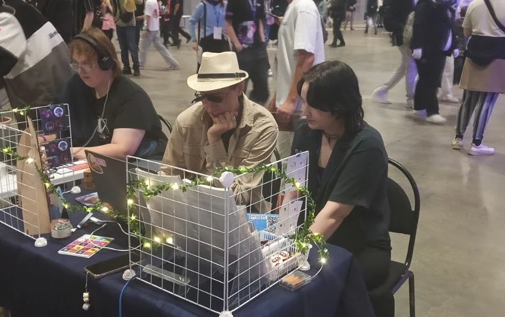

IGB Team на Индиконе 2026!
Побывали на московском фестивале инди-игр и фандомов.
Читать полностьюСвернуть
В отличие от маркета Андерпати нам не пришлось отбивать стоимость стола, активно агитировать чуваков и пытаться угадать какой фандом им интересен. Была просто игра и люди, которые сами приходили и играли.
Через наш стол прошло более двадцати человек, каждый из которых вдумчиво и осмысленно читал текст и иногда даже перепроверял другие исходы. Это были и косплееры, и участники маркетов, и волонтеры мероприятия, и обычные посетители. И по моей памяти все они ушли довольные. Не без косяков мелких, но почти никто не уходил до прохождения на хороший исход первого броска. Всё-таки это очень приятно, потому что заставить человека сесть и спокойно читать, когда вокруг тебя суета и хаос, дорогого стоит.
На мерче мы особо не заработали, всё-таки новых позиций у нас не было, а не фанаты приходили за игрой, не ожидая увидеть ещё и мерч. Но около 7 тысяч мы все равно заработали.
Было сделано много выводов о том, что надо добавить и исправить в демо. Но я надеюсь, что косяков не случится, и Проклятый удачей увидит свет в этом году, а вы финансово поддержите полный релиз.
Всем спасибо за посещение Индикона!